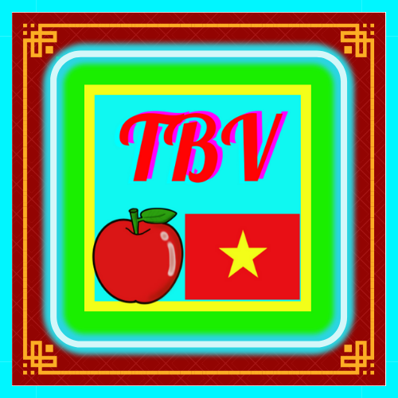

Tank VN — Trò Chơi Đố Vui
© Táo Bắc Việt Team — Code by Táo Đỏ · Ý tưởng: Táo Xanh Lá · Ảnh: NVT Studio
Vui lòng đăng nhập để bắt đầu.
Trả lời
Điểm: 0 / 100
Câu: 0 / 100
⏳ 15s
Đáp án chính xác!
Bạn giành 1 điểm
Chuyển câu tiếp sau
5
s...